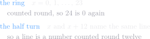
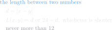
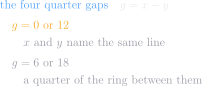
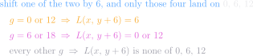

Both machines, as a transition function
A state machine is its states, its inputs, and where each input sends each state. Written that way the two above are small enough to read in full — and the difference in size between them is the point: one has 24 states and two inputs, the other three states and two, and neither has anything else in it.
the tilt

the mode

the tilt ring is the Cayley graph of ℤ₂₄ on the generator 1 — which is exactly what "24 states, two links out of each" says
the mod 24 above is the DEFINITION the links implement, not an operation the code performs: newRing resolves next and prev once, so a turn is a field read and no arithmetic runs at a turn at all
δ(R, a) = R for a chosen mode is the whole of "a choice sticks", and it is why there is no edge between perpendicular and parallel
The arithmetic the machine comes out of
Nothing below mentions the machine — no tilt, no partner, no arrival, no mode. It is a fact about two numbers on a ring of 24: shift one of them by 6, and the only gaps whose length lands on 0, 6 or 12 are the four quarter gaps. That is true whether or not anything is running. Read it back with x as this node's tilt and y as the partner's, and it is the machine: 24 states with two links out of each, a line that reversing does not change, and the two stopping counts — which are therefore not chosen, but counted.




this is where stoppingCounts comes from. { 6 } and { 0, 12 } are not two facts to remember — they are the four quarter gaps, and the shift by 6 above is the quarter turn the partner adds when it sends its normal instead of its tilt
counted from the NEARER END the second of those is a single 0: 0 and 12 are the same count taken at the two ends of one line, which is why a mode's row is { 0 } or { 6 } and never a pair
it also explains the shape the audit found: the two modes are a half turn apart in g, so their two distances sum to a constant, which is why one is the other upside down